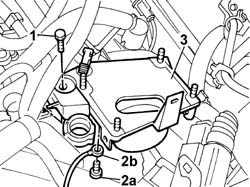

1056B87 INJECTION/IGNITION CONTROL UNIT MOUNTING - R.R.
- Path
- Procedures > 10 ENGINE > 1056 PETROL FUEL INJECTION SYSTEM > 1056B MULTI-POINT INJECTION SYSTEM (MPI) > 1056B87 INJECTION/IGNITION CONTROL UNIT MOUNTING - R.R.
- Kind
- repair procedure (removal / refitting; the operation number is the code)
- Applies to
- engines: 2.4 20V; all production periods
- Interactive page
- https://sloeber94.github.io/elrnDB-lThss/en/#/93718
Applies to: engines: 2.4 20V; all production periods
 Removing
Removing
 Refitting
Refitting- Make sure that the ignition key is in the OFF position, then disconnect the negative battery terminal.
See in Op. 1016A40 Ignition COIL COVER on cylinder head - R.R.
See in Op. 1048A28 vacuum air circuit resonator pipe - r+r
See in Op. 1048A48 HOSE BETWEEN RESONATOR AND THROTTLE CASING - R.R.
See in Op. 1056B82 Injection/ignition system CONTROL UNIT (one) - R.R.
See in Op. 1056B14 THROTTLE CASING - R.R.
- Release the dashboard/engine cable coupling from the mounting bracket.
1. Undo the bolt fixing the injection/ignition control unit mounting to the modular intake manifold.
2. Undo the bolt (2a) and disconnect the earth lead (2b) from the injection/ignition control unit mounting.
3. Remove the injection/ignition control unit mounting.

Applies to: engines: 2.4 20V; all production periods
Refitting
Removing- Position the injection/ignition control unit mounting, connect the earth lead to it, then secure the mounting to the modular intake manifold using the bolt.
See in Op. 1056B14 THROTTLE CASING - R.R.
See in Op. 1056B82 Injection/ignition system CONTROL UNIT (one) - R.R.
See in Op. 1048A48 HOSE BETWEEN RESONATOR AND THROTTLE CASING - R.R.
See in Op. 1048A28 vacuum air circuit resonator pipe - r+r
- Secure the dashboard/engine cable coupling to the mounting bracket.
See in Op. 1016A40 Ignition COIL COVER on cylinder head - R.R.
- Connect the negative battery terminal.
Topics linked from this page (5)
- 1016A40 Ignition COIL COVER on cylinder head - R.R.
- 1048A28 vacuum air circuit resonator pipe - r+r
- 1048A48 HOSE BETWEEN RESONATOR AND THROTTLE CASING - R.R.
- 1056B14 THROTTLE CASING - R.R.
- 1056B82 Injection/ignition system CONTROL UNIT (one) - R.R.
Topics that link to this page (6)
- 1072B10 INTAKE MANIFOLD - R.R. and Replace gasket
- 1072B54 HOSES CONNECTING AIR CHAMBER TO INTAKE MANIFOLD(S) - R.R.
- 1072D50 DEVICE (V.I.S.) with adjustable air ducts - R.R.
- 1088D36 CONNECTOR ON CRANKCASE FOR CYLINDER HEAD/CRANKCASE WATER CIRCUIT HOSE WITH THERMOSTAT CLOSED - R.R.
- 1088D38 CYLINDER HEAD/CRANKCASE WATER CIRCUIT HOSE WITH THERMOSTAT CLOSED - R.R.
- 2130A70 Rubber hose with built in flexible pipe for directing coolant to automatic transmission oil heat exchanger